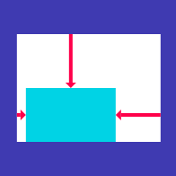
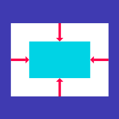
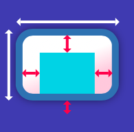
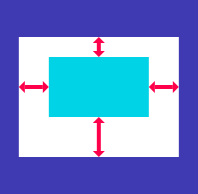
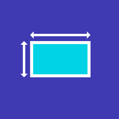

A widget that aligns its child within itself and optionally sizes itself based on the child's size.
For example, to align a box at the bottom right, you would pass this box a tight constraint that is bigger than the child's natural size, with an alignment of Alignment.bottomRight.
The Align widget will be as big as possible if its dimensions are constrained and widthFactor and heightFactor are null. If a dimension is unconstrained and the corresponding size factor is null then the widget will match its child's size in that dimension. If a size factor is non-null then the corresponding dimension of this widget will be the product of the child's dimension and the size factor. For example if widthFactor is 2.0 then the width of this widget will always be twice its child's width.
A widget that centers its child within itself.
This widget will be as big as possible if its dimensions are constrained and widthFactor and heightFactor are null. If a dimension is unconstrained and the corresponding size factor is null then the widget will match its child's size in that dimension. If a size factor is non-null then the corresponding dimension of this widget will be the product of the child's dimension and the size factor. For example if widthFactor is 2.0 then the width of this widget will always be twice its child's width.
A convenience widget that combines common painting, positioning, and sizing widgets.
A container first surrounds the child with padding (inflated by any borders present in the decoration) and then applies additional constraints to the padded extent (incorporating the width and height as constraints, if either is non-null). The container is then surrounded by additional empty space described from the margin.
During painting, the container first applies the given transform, then paints the decoration to fill the padded extent, then it paints the child, and finally paints the foregroundDecoration, also filling the padded extent.
Containers with no children try to be as big as possible unless the incoming constraints are unbounded, in which case they try to be as small as possible. Containers with children size themselves to their children. The width, height, and constraints arguments to the constructor override this.
By default, containers return false for all hit tests. If the color property is specified, the hit testing is handled by ColoredBox, which always returns true. If the decoration or foregroundDecoration properties are specified, hit testing is handled by Decoration.hitTest.
A widget that insets its child by the given padding.
When passing layout constraints to its child, padding shrinks the constraints by the given padding, causing the child to layout at a smaller size. Padding then sizes itself to its child's size, inflated by the padding, effectively creating empty space around the child.
A box with a specified size.
If given a child, this widget forces it to have a specific width and/or height. These values will be ignored if this widget's parent does not permit them. For example, this happens if the parent is the screen (forces the child to be the same size as the parent), or another SizedBox (forces its child to have a specific width and/or height). This can be remedied by wrapping the child SizedBox in a widget that does permit it to be any size up to the size of the parent, such as Center or Align.
If either the width or height is null, this widget will try to size itself to match the child's size in that dimension. If the child's size depends on the size of its parent, the height and width must be provided.
If not given a child, SizedBox will try to size itself as close to the specified height and width as possible given the parent's constraints. If height or width is null or unspecified, it will be treated as zero.
The SizedBox.expand constructor can be used to make a SizedBox that sizes itself to fit the parent. It is equivalent to setting width and height to double.infinity.